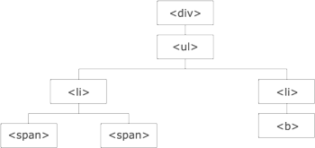

jQuery traversing, que significa "moverse a través", es utilizado para "encontrar" (o seleccionar) elementos HTML basándose en su relación con otros elementos. Se comienza con una selección y se mueve a través de esa selección hasta alcanzar el elemento deseado.
La imagen siguiente ilustra una página HTML como un árbol (el árbol del DOM). Con jQuery traversing, podemos fácilmente movernos hacia arriba (ancestros), hacia abajo (descendientes) y hacia los costados (hermanos) en el árbol, comenzando por el elemento seleccionado (el elemento actual). Este movimiento es llamado traversing - o moverse a través - del árbol del DOM.
Explicación de la ilustración:
jQuery provee una variedad de métodos que nos permiten recorrer el DOM.
La categoría más amplia de métodos de recorrido (traversal) es la de recorrido en árbol.
En capítulos siguientes mostraremos cómo recorrer hacia arriba, hacia abajo y hacia los lados el árbol DOM.